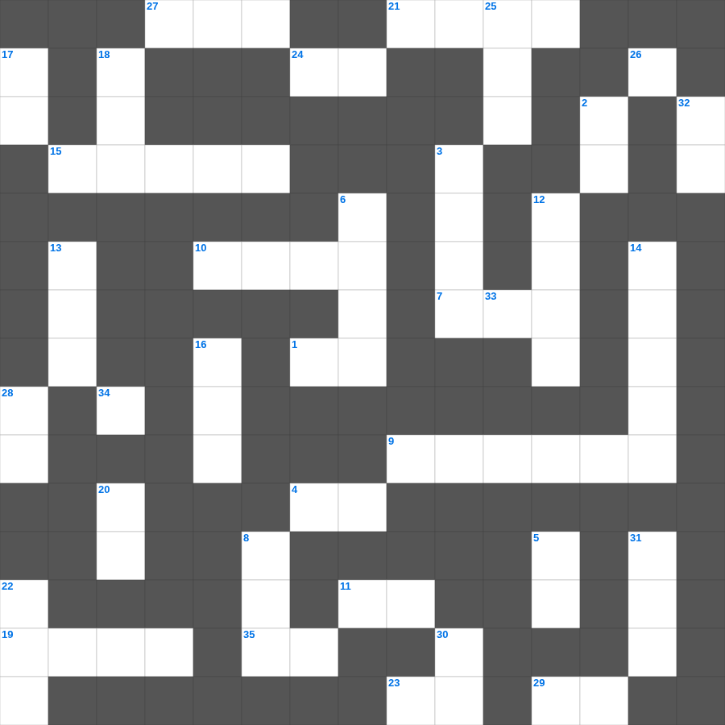

요한일서 마스터 100
📌 서비스 정의
십자가로세로는 교회 주보와 주일학교에서 사용할 수 있는 성경 기반 가로세로 퍼즐 서비스입니다. 성경 인물, 사건, 핵심 구절을 바탕으로 제작되었습니다. 온라인 풀이 및 인쇄 기능을 제공합니다.
📖 요한일서란?
요한일서는 예수 그리스도가 참 하나님이자 참 사람임을 확증하며, 하나님과 형제를 향한 사랑이 참된 신앙의 증거임을 강조하는 서신입니다.
📚 요한일서의 주요 사건·주제
빛 가운데 사는 삶에 대한 가르침 · 하나님의 자녀로서의 신분 · 사랑의 계명에 대한 강조 · 거짓 영을 분별하는 법 · 영생의 확신에 대한 가르침
오늘은 요한일서의 주요 내용을 담은 요한일서 낱말 퍼즐를 준비했습니다. 총 35개의 힌트가 있으며, 주일학교 교재나 성경공부 자료로 활용하기 좋습니다. 무료로 즐기는 요한일서 가로세로 퍼즐을 지금 바로 풀어보세요!

📝 가로 힌트
1. 아브라함의 아버지
4. 다윗의 아내, 사울 왕의 딸
7. 여호수아는 모세의 이것으로 불림
9. 왕 앞에서 슬픈 기색을 보인 느헤미야의 심정
10. 사무엘을 키운 엘리 제사장의 다른 아들
11. 에스더가 왕 앞에 나갈 때 구하지 않은 것 '이것이 정한 것 외에는'
15. 바벨론에 의해 예루살렘 성전 기구들이 옮겨진 곳
19. 하만이 왕의 옷과 말을 준비하게 된 대상
21. 안식일에 드리는 제사
23. 에스더가 세 번째로 왕 앞에 나아갈 때 입은 것
24. 사흘 만에 다시 살아나신 기적
27. 하만이 조서를 내린 날짜 (첫째 달 며칠)
29. 불순종하면 받는 것
34. 엘리바스가 욥을 비판한 근거 '네 이것이 너를 정죄함이라'
35. 왕후 와스디가 폐위된 이유 '왕의 이것을 따르지 않음'
📝 세로 힌트
2. 모든 사람에게 임하는 그 모든 것이 일반이라 의인과 이것에게 임하는 일이 일반이며
3. 반석을 치자 물이 나온 기적
5. 빌레몬서 1장 25절: 주 예수 그리스도의 은혜가 너희 이것과 함께 있을지어다
6. 바울이 복음을 전하다가 돌에 맞은 곳
8. 기드온의 군대 중 물을 핥아 먹어 선발된 인원
12. 하만이 얼굴을 싸고 죽임을 당하게 된 장소
13. 전도자가 자신을 가리켜 부르는 명칭
14. 사울이 다윗에게 준 군복을 다윗이 벗은 이유
16. 다윗의 아들, 지혜의 왕
17. 느헤미야가 이방 여인과 결혼한 자들에게 내린 벌 중 하나
18. 아합 왕의 아내, 바알 숭배자
20. 므비보셋의 아들 이름
22. 바울의 믿음의 아들, 에베소 교회 지도자
25. 성전 기명 중 은 반반은 몇 개인가
26. 모르드개가 하만에게 하지 않은 것
28. 다니엘아 네가 항상 섬기는 네 하나님이 사자들에게서 능히 너를 이것 하셨느냐
30. 왕이 유다 왕 여호야긴의 머리를 들어 주었고 죄수의 이것을 벗겨 주었더라
31. 재물은 영영히 있지 못하나니 이것이 어찌 대대에 있으랴
32. 에스더가 왕의 부름 없이 나갔을 때 왕이 내민 것
33. 다윗이 에돔에 수비대를 두어 그들이 이것이 됨
🧩 이 퍼즐에서 배우는 내용
이 퍼즐은 요한일서 마스터 100의 핵심 단어와 개념을 자연스럽게 복습할 수 있도록 구성되었습니다. 주일학교 수업이나 개인 성경공부에서 학습 내용을 점검하는 용도로 바로 활용할 수 있습니다.
🧑🏫 교회 교육 자료 활용
이 퍼즐은 주일학교 교재 추천 자료로 활용할 수 있고, 주일학교 주보에 넣기 좋은 분량으로 구성되어 있습니다. 수업용 주일학교 교안에 활동지로 붙이거나, 예배 후 복습용 주일학교 공과교재로 바로 사용할 수 있습니다.
🏷️ 키워드
요한일서 낱말 퍼즐, 요한일서, 십자가로세로, 성경퀴즈, 말씀퀴즈, 가로세로퍼즐, 주일학교 교재 추천, 주일학교 주보, 주일학교 교안, 주일학교 공과교재